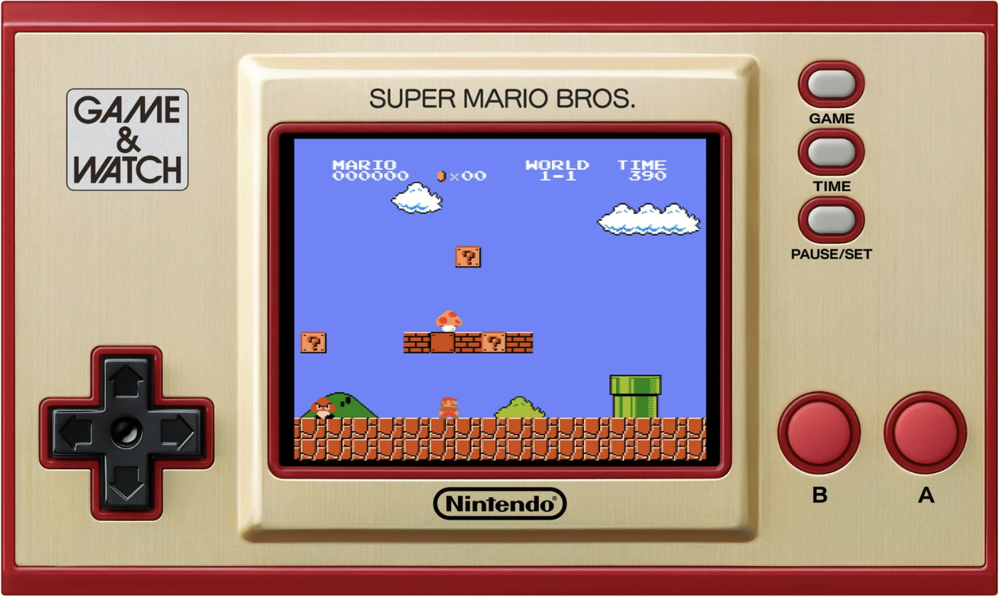

Super Mario Reinforcement Learning

Introduction
In a world where Mario doesn’t need your thumbs to save the princess, a neural network instead takes up the mantle of heroism, bounding over pits and stomping Goombas with algorithmic enthusiasm. This was the vision of this project that I, and three other students—Tony Lei, Bree Chen, and Alyssa Lui—worked on to create and train an unsupervised learning neural network to play Super Mario Bros. Born from a blend of nostalgia and curiosity, our objective was to explore the capabilities of unsupervised learning in a complex, dynamic environment, demonstrating how artificial intelligence can learn and adapt without explicit human supervision.
Goals and Overview
The primary goal of our project was to develop an AI agent capable of playing Super Mario Bros. autonomously, learning game mechanics and strategies through exploration and experimentation. The algorithm by which our AI learns to play the game is known as an unsupervised reinforcement learning algorithm, which is notable in how it closely mimics the way a human player might learn to play the game. We wanted our AI to learn to play the game on its own, eventually converging on an optimal strategy.
Framework
Unsupervised learning is a process whereby an AI learns to achieve a specific output essentially through trial and error. The AI is allowed the freedom to explore the world and find gameplay strategies on its own. This type of learning encourages it to rely on pattern recognition and visual observation to guide its actions, showcasing the AI’s potential to adapt and generalize in unpredictable scenarios.
Yet even the most astute observer needs feedback to refine their actions, and herein lies the synergy between unsupervised learning and reinforcement learning. To give our AI a sense of how to improve over time, we defined clear metrics to serve as indicators of success. There are many different indicators you could use here, score being an obvious one, but we decided to reward our AI for just moving closer to the flagpole. This type of reward tends to prioritize beating levels as fast as possible.
Then, each time the AI made a decision—whether it was to jump, run, or stand still—it received feedback based on the outcome. Successfully moving to the right increased its score, while dying or failing to navigate an obstacle reduced it. Through iterative gameplay, the AI used this feedback to adjust its strategies, gradually honing its performance, much like a human would.
Methodology
This section will go over some of the more technically involved parts of the design and implementation of this project.
Implementation Framework
The implementation of this project in code follows this extremely helpful and detailed tutorial on youtube, from Sourish Kundu. This video is amazing, going over the theoretical math behind this project, and showing how to actually implement that theoretical framework in code.
The implementation involved setting up the environment with OpenAI’s Gym, designing the neural network architecture, and developing the training loop to iteratively update the Q-values and improve the agent’s performance. We made sure to adapt and expand upon the concepts introduced in the video to tailor the project to our specific goals and requirements.
Architecture
The Double Deep Q Network, or DDQN, is a sophisticated variant of the Deep Q Network designed to mitigate overestimation bias in action-value estimation from traditional reinforcement learning. It does this by having two neural networks working together. The online neural network makes decisions for mario, and the target network predicts the future rewards from taking that action. This architecture was chosen for its precision and reliability and its ability to stabilize training and to accelerate convergence of the network.
The neural networks are comprised of 3 convolutional layers to process visual data and 3 fully connected layers to drive decision-making, using ReLU activations. The convolutional layers process input frames to detect features like edges, textures, and objects. By applying what are called convolutional filters, the network learns to recognize patterns such as enemies, obstacles, and movements within the game. After the convolutional layers, the fully connected layers combine the extracted features and predict the the best possible action to take in a given game state.
Simplification Choices
To make the training process feasible and efficient, we incorporated several simplification choices:
- Preprocess Frames: We preprocess the game frames using wrappers to reduce computational complexity and simplify training. A
SkipFramewrapper reduces the frequency of updates by repeating the same action for a fixed number of frames. Frames are converted to grayscale to reduce the amount of data the network must process. They are resized to a smaller, standardized size (84x84 pixels) to decrease computational load. Consecutive frames are then stacked to provide temporal context, which helps the agent understand movement and changes in the environment. - Limited Action Space: We restricted the agent’s action space to a simplified set of actions (e.g., moving right, jumping) to focus on the essential movements needed to navigate the level. This reduces the complexity of the decision-making process and speeds up learning, though it does limit flexibility of the model as Mario is only allowed to perform movements that move him towards the flagpole.
- Reward Structure: The reward system incentivizes the agent to progress through the level by awarding positive rewards for moving right and penalizing it for standing still or dying. This straightforward reward structure guides the agent towards the main goal of completing the level.
Training Process
Training our AI involved a reinforcement learning loop, a cycle of action and feedback. At each step, the AI was fed the current frame state, and the online neural network chose an action—jump, run, or stand still—based on its current understanding, and received feedback in the form of rewards or penalties. This feedback guided the AI to adjust the weights of its neural network to take better actions in the next iteration, slowly converging on game play that maximized the feedback objectives.
To enhance training stability, we utilized a replay buffer. This technique stores past experiences and refers to them during training, allowing the AI to learn from a diverse set of past scenarios and reduce the risk of overfitting by breaking the correlation between consecutive states. Balancing exploration and exploitation was also key; the AI needed to explore new strategies while exploiting known successful ones. Initially the AI agent is heavily biased to explore new strategies by taking random actions. Eventually through training it starts to rely more on exploiting learned strategies.
Results
Our finished AI, while not exactly championship material, embodies the countless hours of coding and tinkering, the myriad challenges, and the occasional existential debate about the nature of intelligence in video games.
In the video, you can see some of the very first attempts of the AI agent to traverse the first level, 1-1. At this point, the AI is making moves almost completely randomly. He sucks, but understandably. He has no learned experiences yet, so his only option is to just press random buttons and see what sticks. His biggest hurdles seem to be the tall pipe jumps, because it takes continuous jump inputs to get past these, which are rare when you are preseing random buttons.
After 100 hours of training, with 50,000 iterations of experience on this one level under his belt, we present below a successful attempt of the AI on the very first level.
He still seems to get stuck on the pipes, but he is learning, and this AI is clearly better than the first one. What was surprising to me was how long the training process actually took! As students we didn’t have access to unlimited resources in computing, and training this AI for 3 days straight was actually a lot for us. If we had more time, ideally, we could have kept training, and could expect this AI to get better and better over time. If we had the resources, I would love to do this.
It’s not perfect, but watching our creation tackle those iconic levels with earnest determination is nothing short of satisfying. In a way, it’s a humbling reminder that even the most sophisticated machines still have a lot to learn from the simplicity of a classic game.
Reflections
This project was a formidable challenge—a crucible that tested our limits and deepened our understanding of reinforcement learning. Our inexperience with coding such algorithms meant grappling with a steep learning curve, compounded by the computational demands of training on limited hardware. Yet, despite the setbacks, we achieved a significant milestone: Mario successfully beat the first level. This outcome, though modest in the grand scheme, stands as a testament to our perseverance and the potency of the Double Deep Q-Network (DDQN) algorithm.
Through this endeavor, I honed my skills in coding, neural network design, and the intricacies of reinforcement learning. The project was more than just a technical exercise; it was an immersive dive into the complexities of AI, requiring the synthesis of theory and practice in real time.
Given more time and resources, the model’s performance could be significantly enhanced. Extended training on more powerful hardware would allow Mario to refine his decision-making, transforming his erratic movements into deliberate actions. Moreover, exploring advanced algorithms like Proximal Policy Optimization (PPO) and optimizing hyperparameters could unlock new levels of efficiency and performance.
In the end, this project was not just about creating an AI that plays a game; it was about pushing the boundaries of what we know and can do with machine learning. The journey was as rewarding as the destination, offering insights that will inform my future work in AI and beyond. The link to the github for this project is here.